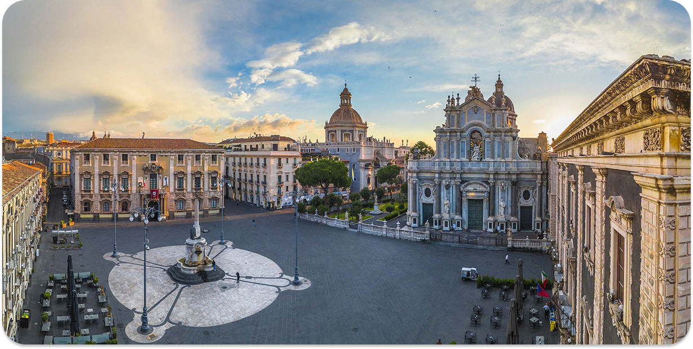
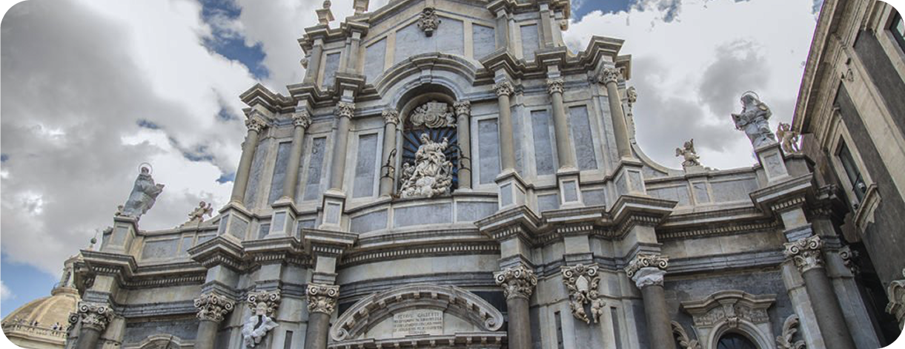
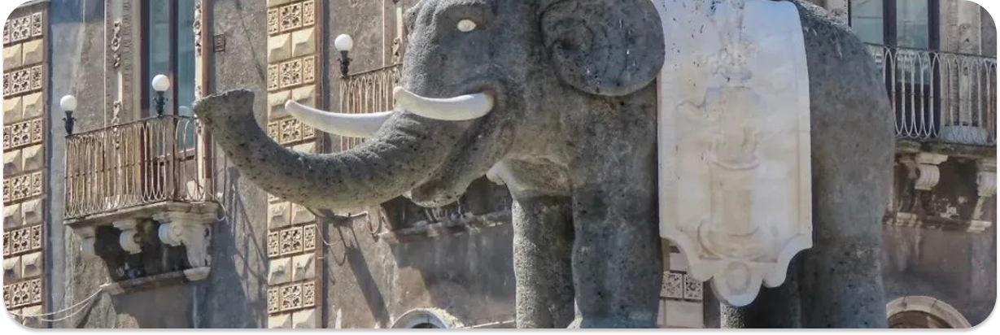
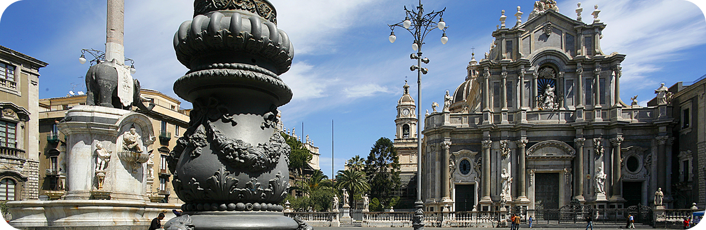

La Piazza del Duomo è uno dei principali spazi pubblici del centro storico di Catania e ospita la Cattedrale di Sant’Agata, elemento che ne definisce il ruolo religioso e urbano.
Dove si trova la piazza?
La Piazza del Duomo si colloca nel cuore del centro storico di Catania e rappresenta uno dei principali punti di riferimento.
La piazza organizza il rapporto tra alcune delle principali vie del centro e costituisce uno spazio pubblico centrale nella vita della città.
Ruolo della Cattedrale
Sul lato orientale della piazza si affaccia la cattedrale di Sant’Agata, principale edificio religioso della città. La presenza della cattedrale contribuisce in modo decisivo alla definizione dello spazio urbano e rafforza il carattere simbolico e religioso della piazza.
Elementi importanti
Uno degli elementi più riconoscibili della piazza è la Fontana dell’Elefante, collocata al centro dello spazio urbano. La fontana, composta da una scultura in pietra lavica raffigurante un elefante e sormontata da un obelisco, è uno dei simboli della città.
Spazio simbolico della città
La Piazza del Duomo concentra in un unico luogo alcune delle principali funzioni religiose, civili e rappresentative della città. La presenza della cattedrale, degli edifici istituzionali e dei principali elementi monumentali rende questo spazio uno dei punti più significativi del centro storico.



